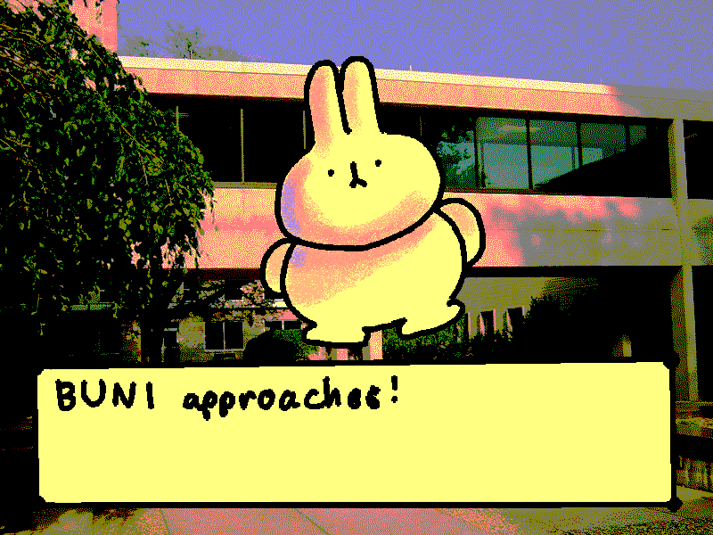
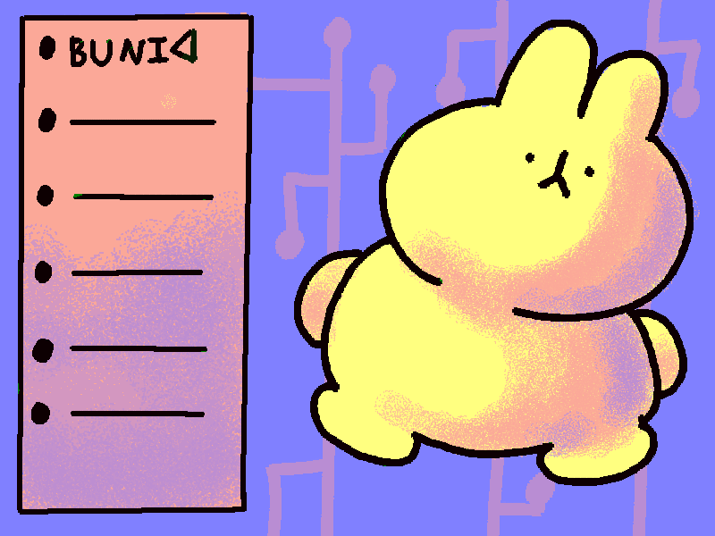
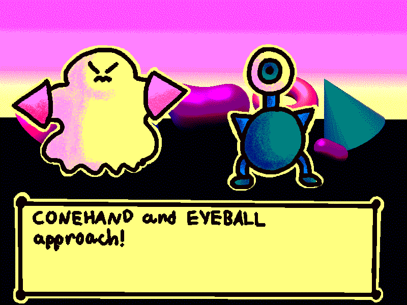

Creature Tracker is a concept for a video game involving registering various creatures using a device reminicent of an old cell phone. They then can assist the player in various puzzles. The aesthetics of the game are inspired by 90's computer games and applications and were expressed through various media, mainly digital art and needle felting. Creature Tracker was presented at the 2025 Studio 304 Creator's Showcase in August of that year at the St. Joseph County Public Library. Additionally, it was presented at the smARTbox, also at the St. Joseph County Public Library, in September 2025.
Showcase Pictures
Creature Bios
Screenshot Mockups



Other Images
- Unused Creature 1
- Unused Creature 2
- Unused Creature 3
- Unused Creature 4
- Unused Creature 5
- Unused Creature 6
- Unused Creature 7
- Unused Creature 8
- Unused Creature 9
- Unused Creature 10
- Unused Creature 11
- Unused Creature 12
- Player Character
{kind=link}
{kind=link}
{kind=link}
{kind=link}
{kind=link}
{kind=link}
{kind=link}
{kind=link}
{kind=link}
{kind=link}
{kind=link}
{kind=link}
{kind=link}